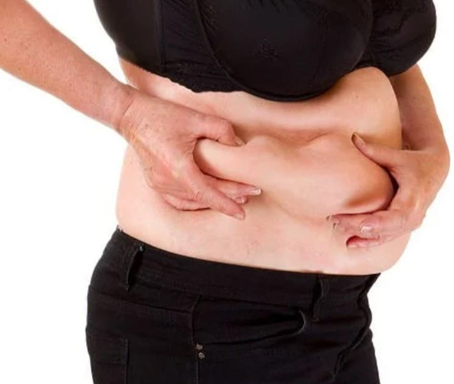

Избыточный вес может быть источником различных заболеваний и является следствием неправильного питания и отсутствия физической нагрузки. Однако это не приговор и не повод опускать руки – избавиться от лишних килограммов реально!

Что такое лишний вес?
О лишнем весе говорят в том случае, если вес тела больше не соответствует его росту. Находитесь ли вы в диапазоне нормального веса или нет, определяется по так называемому индексу массы тела (ИМТ). Избыточный вес может вызвать многие заболевания - например, высокое кровяное давление или хроническую сердечную недостаточность. Часто причиной появления лишних килограммов является плохое питание, но им список причин не исчерпывается.
У меня избыточный вес?
Ключевым фактором в определении того, имеется ли лишний вес, является рост. ИМТ рассчитывается так: вес в килограммах разделить на рост в метрах в квадрате. Всемирная организация здравоохранения использует следующие цифры для оценки результатов:
- менее 18,5 = недостаточный веc
- 18,5 - 24,9 = нормальный вес
- 25 - 29,9 = избыточный вес
- 30 - 34,9 = ожирение I степени
- 35 - 39,9 = ожирение II степени
- более 40 = ожирение III степени
Важно: ИМТ – это лишь примерный ориентир для оценки, потому что он не учитывает телосложение, жировую и мышечную массу. Очень мускулистые люди могут быть в диапазоне избыточного веса или даже ожирения.
Опасный жир на животе
Есть несколько типов телосложения, которые указывают на место активного накопления жира:
- Андроидный тип «яблоко»: жир откладывается на животе и торсе. В основном это характерно для мужчин.
- Гиноидный тип «груша»: жир откладывается в основном на ягодицах и на ногах. Это характерно для женщин.
- Висцеральный жир, то есть жир на животе, согласно результатам исследований, является наиболее опасным: он создает предпосылки для развития разных болезней, например, диабета.
Как появляется избыточный вес?
Проще говоря, избыточный вес возникает из-за приема большего числа калорий, чем необходимо организму. На это могут быть разные причины, например:
- Питание: наиболее очевидной причиной ожирения являются пищевые привычки. У многих людей нарушено появление чувства сытости: мозг слишком поздно сигнализирует о том, что было принято достаточно пищи, так что каждый раз возникает переедание. Второй фактор - и более распространенная причина ожирения - это неправильный выбор продуктов: сладости, мучное, фастфуд, сладкие напитки. Если вы не следите за питанием и едите все подряд, вы рано или поздно поправитесь.
- Движение: также одной из распространенных причин ожирения является нехватка движения. Большинство людей работают весь день сидя, перемещаются на машине, вечером сидят перед телевизором или компьютером. Такой образ жизни ведет не только к увеличению веса, но и к появлению проблем со здоровьем, например, повышению риска развития сердечно-сосудистых заболеваний.
- Генетика: гены тоже могут быть виновниками появления лишнего веса. Например, у некоторых людей генетически снижается скорость основного обмена, то есть количество энергии, которое организм использует в состоянии покоя. В результате они полнеют быстрее, если они едят немного больше, чем нужно организму.
- Стресс и беспокойство: многие люди едят из-за переживаний, стресса и даже скуки.
- Заболевания: например, гипотиреоз вызывает набор веса.
- Лекарства: есть лекарства, которые повышают аппетит. К ним относятся прежде всего медикаменты, которые нарушают гормональный баланс, например, оральные контрацептивы или содержащие кортизон препараты.
- Социальные факторы: особенности личности тоже оказывают влияние на массу тела. Например, кто-то не может оставить тарелку пустой, хотя давно наелся. Кроме того, исследования показали, что ожирение чаще встречается в социально более слабых слоях населения.
Чем плох избыточный вес?
Эстетика – это второстепенная проблема. Намного хуже проблемы со здоровьем, которым способствует лишний вес. К ним относятся:
- Проблемы с суставами (например, бедра и колена)
- Боли в спине
- Диабет
- Нарушения кровообращения
- Высокое кровяное давление
- Сердечная недостаточность, инфаркт
- Одышка из-за недостатка кислорода (легкие не могут работать в полной мере, чтобы обеспечить организм достаточным количеством кислорода)
- Апноэ сна (прерывание дыхания во время сна), из-за этого усталость в течение дня
- Храп
- Сильное потоотделение
- Депрессия.
Что делать, если у вас избыточный вес?
Лечение избыточного веса зависит от его причины. Как правило, основное внимание уделяется изменению образа жизни с точки зрения питания и физической нагрузки. Рекомендуем сначала обратиться к диетологу. Обычно врачи назначают диету, которая должна состоять в основном из сложных углеводов, фруктов и овощей, молочных продуктов, рыбы и небольшого количества постного мяса. Таким образом должен быть достигнут отрицательный баланс калорий – это гарантия похудения.
ВОЗ рекомендует 150 минут занятий спортом в неделю. Хорошо подходят людям с избыточным весом плавание и ходьба. Но не стоит забывать о тренировке мышц силовыми упражнениями.